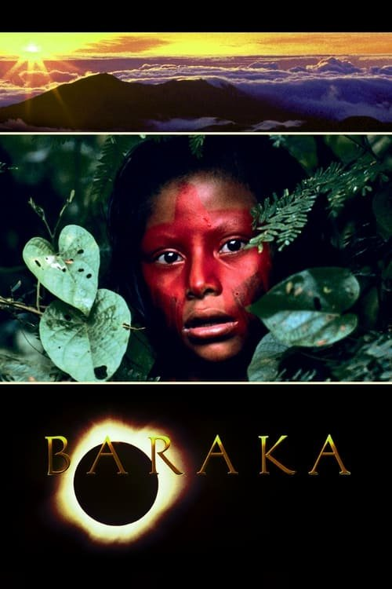

Baraka (1992)
Sinopsis Rápida
Un viaje cinematográfico sin palabras a través de la belleza y la brutalidad del planeta Tierra, explorando la compleja relación entre la humanidad y su entorno.
Sinopsis Detallada
Baraka es una experiencia sensorial única, un documental que abandona la narrativa tradicional para sumergirnos en un viaje visual impactante por 24 países. Sin diálogos ni personajes, la película nos muestra la asombrosa diversidad cultural y natural del mundo, confrontando la grandeza de la naturaleza con la fragilidad y la paradoja de la existencia humana. Desde imponentes paisajes hasta rituales ancestrales, la película te invita a reflexionar sobre nuestro lugar en el planeta y la búsqueda espiritual que une a la humanidad a través de las culturas. Una obra maestra que te dejará sin aliento.
¿Por qué tenés que verla?
- Una experiencia visual impresionante que te transportará a rincones remotos del mundo.
- La banda sonora hipnótica de Michael Stearns potencia las imágenes y las emociones de manera excepcional.
- Un clásico del cine documental que ha influenciado a innumerables cineastas y ha generado conversaciones sobre la relación entre el hombre y la naturaleza.
- Una reflexión profunda sobre la condición humana y nuestro lugar en el cosmos.
Idea Extra
Comparación de Baraka con otros documentales de naturaleza y viajes de impacto similar, analizando sus diferencias y similitudes en cuanto a estilo y mensaje.